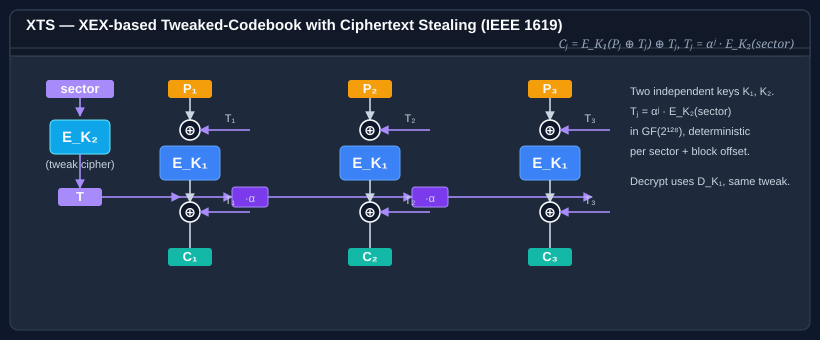

Class XtsModeTransform
Applies XEX-based Tweaked CodeBook mode with ciphertext Stealing (XTS) to an underlying pair of IBlockCipher instances, per IEEE Std 1619-2007 / NIST SP 800-38E.
Inherited Members
Namespace: Bodu.Security.Cryptography
Assembly: Bodu.Security.Cryptography.dll
Syntax
public sealed class XtsModeTransform : IBlockCipherModeTransform, IDisposableRemarks

XTS requires two independent ciphers keyed with different material:
-
dataCipher(Key₁) — encrypts or decrypts the data. Shown as E_K₁ in the central column of the diagram. -
tweakCipher(Key₂) — encrypts the sector number (tweak). Shown as E_K₂ on the left.
Using the same key for both reduces XTS to a single-key construction and weakens security. Because IBlockCipher exposes no key material, this type cannot detect Key₁ == Key₂; ensuring the two ciphers are independently keyed is the caller's responsibility.
Implementation scope. This transform implements the XEX core for whole 128-bit blocks and does not perform ciphertext stealing: input whose length is not a multiple of the block size is rejected rather than stolen, so it is not interoperable with IEEE 1619 data units that end on a partial block. The GF(2128) tweak reduction is defined only for 128-bit blocks, so both ciphers must have a 128-bit block size — the constructor rejects any other width.
For each 128-bit block j in a sector, the XEX construction is:
T_j = α^j ⊗ tweakCipher.Encrypt(tweak) // Galois field multiplication
C_j = dataCipher.Encrypt(P_j ⊕ T_j) ⊕ T_j // encrypt
P_j = dataCipher.Decrypt(C_j ⊕ T_j) ⊕ T_j // decryptThe horizontal tweak bus in the diagram corresponds to this successive ·α multiplication: each ·α box
doubles the tweak in GF(2¹²⁸) so the Tⱼ arriving at cell j is αʲ times the base tweak. The two XOR nodes
inside each cell — before and after the data cipher — realize the ⊕ T_j pairs in the equation above.
GF(2^128) multiplication uses the primitive polynomial x^128 + x^7 + x^2 + x + 1 with little-endian bit representation (byte 0, bit 0 = coefficient of x^0), identical to IEEE 1619.
When to use XTS. The standard mode for sector-level disk encryption — used by BitLocker, FileVault, dm-crypt/LUKS, VeraCrypt, and the IEEE 1619 disk-encryption specification. XTS is designed specifically for the random-access, fixed-size-block setting where ciphertext expansion is impossible (the on-disk sector size cannot grow), which means it provides confidentiality but no authentication. Do not use XTS for protecting messages over untrusted channels — pick an AEAD mode (GcmModeTransform, EaxModeTransform) for that. For new disk encryption designs that can afford a per-sector tag, AEAD-based alternatives (Adiantum, AES-XTS-HMAC, or storage-specific AEAD modes) provide stronger guarantees.
Examples
using System.Security.Cryptography;
using Bodu.Security.Cryptography;
// XTS uses two independent keys — Key1 for data, Key2 for the tweak. Never share keys.
using IBlockCipher data = new AesBlockCipher(key1);
using IBlockCipher tweak = new AesBlockCipher(key2);
byte[] sectorNumber = BitConverter.GetBytes((long)42); // little-endian sector number, padded to block size
Array.Resize(ref sectorNumber, data.BlockSize / 8);
IBlockCipherModeTransform xts = new XtsModeTransform(data, tweak, sectorNumber);
byte[] ciphertext = new byte[plaintext.Length];
int written = xts.Transform(plaintext, ciphertext, encrypt: true);Constructors
| Name | Description |
|---|---|
| XtsModeTransform(IBlockCipher, IBlockCipher, byte[]) | Initializes a new instance of the XtsModeTransform class. |
Methods
| Name | Description |
|---|---|
| Dispose() | Releases the resources used by this instance and zeroes the retained tweak so that key-equivalent state does not linger in memory after disposal. The underlying data and tweak IBlockCipher instances are not disposed by this type — ownership remains with the caller. |
| Transform(ReadOnlySpan<byte>, Span<byte>, bool) | Transforms |